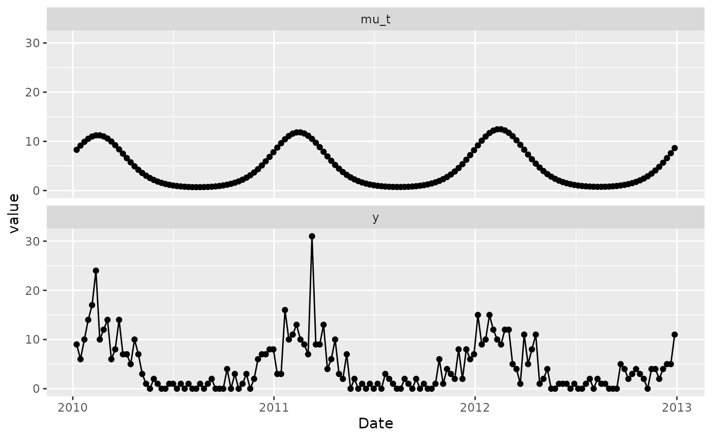
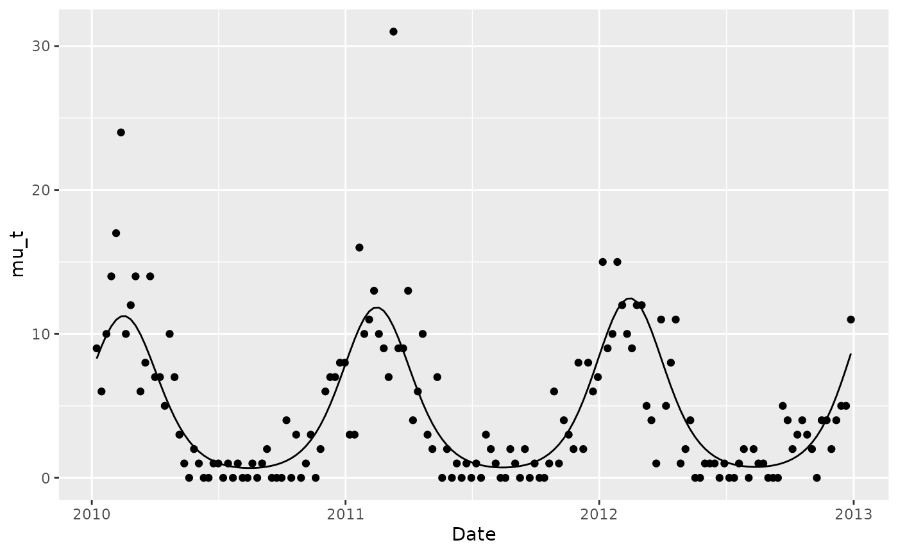
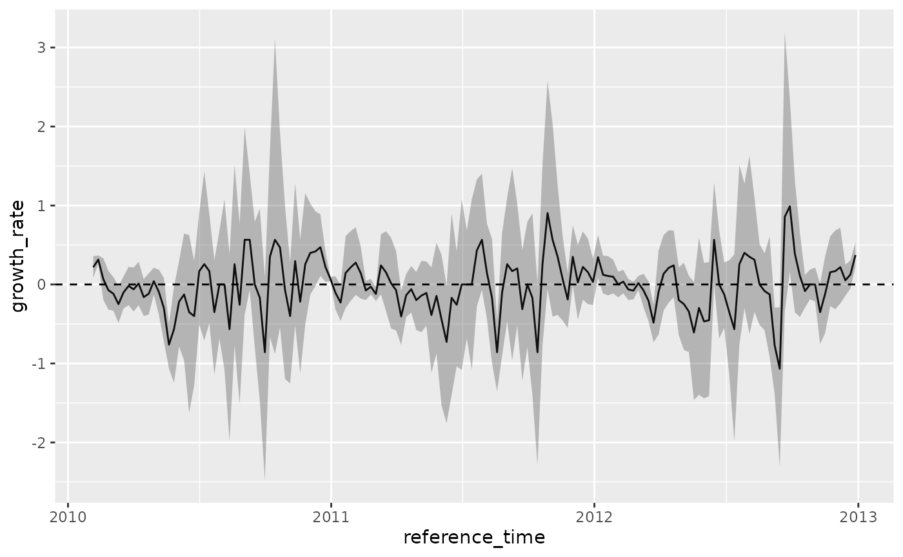
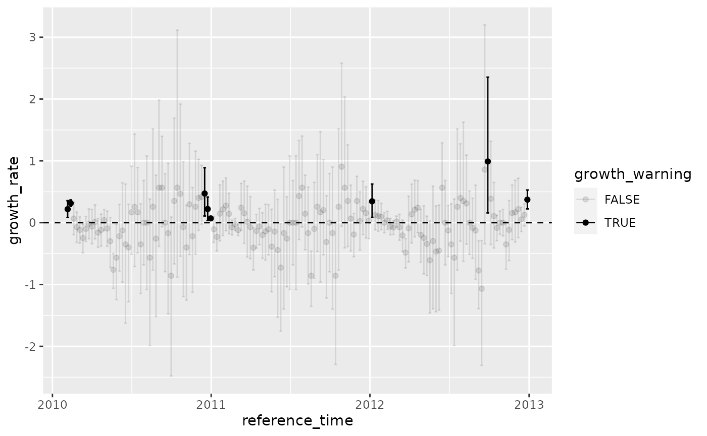

Automated and Early Detection of Seasonal Epidemic Onset
Source:vignettes/articles/aedseo.Rmd
aedseo.Rmd
library(aedseo)
library(ISOweek)
library(ggplot2)
library(dplyr)
#>
#> Attaching package: 'dplyr'
#> The following objects are masked from 'package:stats':
#>
#> filter, lag
#> The following objects are masked from 'package:base':
#>
#> intersect, setdiff, setequal, union
library(tidyr)
library(tibble)
library(kableExtra)
#>
#> Attaching package: 'kableExtra'
#> The following object is masked from 'package:dplyr':
#>
#> group_rowsIntroduction
Understanding the seasonality of respiratory virus infections is crucial for countries to make informed recommendations concerning the timing of monoclonal antibody provision, particularly for the treatment and prophylaxis of children exposed to respiratory syncytial virus (RSV) in their first year(s) of life, primarily premature infants Teirlinck et al. (2023). Moreover, the timely detection of epidemic onset has the potential to guide empirical antiviral therapy for hospitalized patients with suspected influenza (McGeer 2009). This, in turn, contributes to the reduction of the health an economic burden caused by respiratory virus infections. Achieving accurate identification of the beginning of seasonal respiratory epidemics necessitates regular and prompt data collection, coupled with a standardized procedure for continuous data analysis.
A wide range of statistical methods are at out disposal for defining influenza epidemics. Over the last two decades, techniques such as Serfling-based models and dynamic linear models, which rely on recent data Pelat et al. (2007), have been extensively employed for this purpose.
This package revolves around the timely detection of the onset of seasonal respiratory epidemics.
Methodology
The methodology used to detect the onset of seasonal respiratory epidemics can be divided into two essential criteria:
- The local estimate of the exponential growth rate, \(r\), is significantly greater than zero.
- The sum of cases (SoC) over the past \(k\) units of time exceeds a disease-specific threshold.
Here, \(k\) denotes the window size employed to obtain the local estimate of the exponential growth rate and the SoC. When both of these criteria are met, an alarm is triggered and the onset of the seasonal epidemic is detected.
Exponential growth rate
Inspired by Obadia, Haneef, and Boelle (2012)
The exponential growth rate, denoted as \(r\), represents the per capita change in the number of new cases per unit of time. Given that incidence data are integer-valued, the proposed method relies on generalized linear models (GLM). For count data, the Poisson distribution is a suitable choice as a model. Hence, the count observations denoted as \(Y\) are assumed to follow a Poisson distribution
\[\begin{equation} Y \sim \Pois(\lambda) \end{equation}\]
Here, the link function, \(\log()\), connects the linear predictor to the expected value of the data point, expressed as \(\log(\lambda)=\mu\). Given a single continuous covariate \(t\), the mean \(\mu\) can be expressed as
\[\begin{equation} \mu = \alpha + r t \end{equation}\]
This is equivalent to a multiplicative model for \(\lambda\), i.e.
\[\begin{equation} \lambda = \exp(\alpha + r t) = \exp(\alpha) \exp(r t) \end{equation}\]
Intuitively, negative values of \(r\) result in a decline in the number of observed cases, while \(r=0\) represents stability, and positive values of \(r\) indicate an increase. The direct relationship between growth rates and reproductive numbers is further elaborated in the study by Wallinga and Lipsitch (2007).
It is important to note that the Poisson distribution assumes that the mean and variance are equal. In reality, real data often deviate from this assumption, with the variance (\(v\)) being significantly larger than the mean. This biological phenomenon, known as overdispersion, can be addressed within a model in various ways. One approach is to employ quasi-Poisson regression, which assumes \(v=\sigma\lambda\), or to use negative binomial regression, which assumes \(v=\lambda+\lambda^2/\theta\), where both \(\sigma\) and \(\theta\) are overdispersion parameters.
Simulations
To assess the effectiveness of the proposed algorithm, a simulation study is conducted. The simulated data is generated using a negative binomial model with a mean parameter \(\mu\) and a variance parameter \(\phi\mu\). In this context, \(\phi\) denotes a dispersion parameter, which is assumed to be greater than or equal to 1. The mean, denoted as \(\mu(t)\), is defined by a linear predictor that incorporates both a trend component and a seasonality components represented by Fourier terms. The equation for \(\mu(t)\) is as follows:
\[\begin{equation} \mu(t) = \exp\Biggl( \theta + \beta t + \sum_{j=1}^m \biggl( \gamma_{\sin} \sin\Bigl( \frac{2 \pi t}{52}\Bigl) + \gamma_{\cos} \cos \Bigl( \frac{2 \pi t}{52} \Bigl) \biggl) \Biggl) \end{equation}\]
To accommodate a variety of scenarios encountered in practical applications, the simulations is generated using different combinations of parameters. These parameters include baseline frequencies of reports denoted as \(\theta\), trends represented by \(\beta\), seasonal patterns characterized by \(\gamma_{\sin}\) and \(\gamma_{\cos}\), as well as dispersions indicated by \(\phi\). A list of the specific parameter combinations are provided in Table XX.
# TODO: #7 Conduct the simulation study and write the article on the `aedseo`
# package. @telkamp7
parameter_combinations <- as_tibble(expand_grid(
theta = c(3, 4, 5, 6, 7),
beta = c(0.001),
gamma_sin = c(1, 2),
gamma_cos = c(1, 2),
phi = c(1, 2)
))
parameter_combinations %>%
mutate(Scenario = row_number()) %>%
select(Scenario, theta:phi) %>%
rename(
`$\\theta$` = theta,
`$\\beta$` = beta,
`$\\gamma_{\\sin}$` = gamma_sin,
`$\\gamma_{\\cos}$` = gamma_cos,
`$\\phi$` = phi
) %>%
kbl(
booktabs = TRUE,
escape = FALSE,
align = "l",
caption = "Parameters and criteria to generate the 40 scenarios.",
linesep = c(rep("", 7), "\\addlinespace")
) %>%
kable_paper(latex_options = c("HOLD_position"))| Scenario | \(\theta\) | \(\beta\) | \(\gamma_{\sin}\) | \(\gamma_{\cos}\) | \(\phi\) |
|---|---|---|---|---|---|
| 1 | 3 | 0.001 | 1 | 1 | 1 |
| 2 | 3 | 0.001 | 1 | 1 | 2 |
| 3 | 3 | 0.001 | 1 | 2 | 1 |
| 4 | 3 | 0.001 | 1 | 2 | 2 |
| 5 | 3 | 0.001 | 2 | 1 | 1 |
| 6 | 3 | 0.001 | 2 | 1 | 2 |
| 7 | 3 | 0.001 | 2 | 2 | 1 |
| 8 | 3 | 0.001 | 2 | 2 | 2 |
| 9 | 4 | 0.001 | 1 | 1 | 1 |
| 10 | 4 | 0.001 | 1 | 1 | 2 |
| 11 | 4 | 0.001 | 1 | 2 | 1 |
| 12 | 4 | 0.001 | 1 | 2 | 2 |
| 13 | 4 | 0.001 | 2 | 1 | 1 |
| 14 | 4 | 0.001 | 2 | 1 | 2 |
| 15 | 4 | 0.001 | 2 | 2 | 1 |
| 16 | 4 | 0.001 | 2 | 2 | 2 |
| 17 | 5 | 0.001 | 1 | 1 | 1 |
| 18 | 5 | 0.001 | 1 | 1 | 2 |
| 19 | 5 | 0.001 | 1 | 2 | 1 |
| 20 | 5 | 0.001 | 1 | 2 | 2 |
| 21 | 5 | 0.001 | 2 | 1 | 1 |
| 22 | 5 | 0.001 | 2 | 1 | 2 |
| 23 | 5 | 0.001 | 2 | 2 | 1 |
| 24 | 5 | 0.001 | 2 | 2 | 2 |
| 25 | 6 | 0.001 | 1 | 1 | 1 |
| 26 | 6 | 0.001 | 1 | 1 | 2 |
| 27 | 6 | 0.001 | 1 | 2 | 1 |
| 28 | 6 | 0.001 | 1 | 2 | 2 |
| 29 | 6 | 0.001 | 2 | 1 | 1 |
| 30 | 6 | 0.001 | 2 | 1 | 2 |
| 31 | 6 | 0.001 | 2 | 2 | 1 |
| 32 | 6 | 0.001 | 2 | 2 | 2 |
| 33 | 7 | 0.001 | 1 | 1 | 1 |
| 34 | 7 | 0.001 | 1 | 1 | 2 |
| 35 | 7 | 0.001 | 1 | 2 | 1 |
| 36 | 7 | 0.001 | 1 | 2 | 2 |
| 37 | 7 | 0.001 | 2 | 1 | 1 |
| 38 | 7 | 0.001 | 2 | 1 | 2 |
| 39 | 7 | 0.001 | 2 | 2 | 1 |
| 40 | 7 | 0.001 | 2 | 2 | 2 |
mu_t <- function(
t,
theta = 1,
exp_beta = 1.001,
gamma_sin = 1,
gamma_cos = 1,
trend = 1,
j = 1,
...) {
# Start construction of linear predictor
linear_predictor <- theta
# ... add a trend if the scenario request it
if (trend == 1) {
linear_predictor <- linear_predictor + log(exp_beta) * t
}
# ... add a seasonal component
linear_predictor <- linear_predictor +
gamma_sin * sin(2 * pi * t * j / 52) +
gamma_cos * cos(2 * pi * t * j / 52)
return(exp(linear_predictor))
}
simulate_from_nbinom <- function(...) {
# Set some default values for the simulation
default_pars <- list(
"t" = 1,
"theta" = 1,
"exp_beta" = 1.001,
"gamma_sin" = 1,
"gamma_cos" = 1,
"trend" = 1,
"j" = 1,
"phi" = 1,
"seed" = 42
)
# Match call
mc <- as.list(match.call())[-1]
# ... and change parameters relative to the call
index_mc <- !names(default_pars) %in% names(mc)
mc <- append(mc, default_pars[index_mc])[names(default_pars)]
# Set the seed
set.seed(mc$seed)
# Calculate the number of time points
n <- length(eval(mc$t))
# Calculate mu_t
mu_t_scenario <- do.call(what = "mu_t", args = mc)
# ... and compute the variance of the negative binomial distribution
variance <- mu_t_scenario * mc$phi
# ... and infer the size in the negative binomial distribution
size <- (mu_t_scenario + mu_t_scenario^2) / variance
# Plugin and simulate the data
simulation <- rnbinom(n = n, mu = mu_t_scenario, size = size)
return(list("mu_t" = mu_t_scenario, "simulation" = simulation, "pars" = mc))
}
# Define the number of years and the number of months within a year
years <- 3
weeks <- 52
# ... calculate the total number of observations
n <- years * weeks
# ... and a vector containing the overall time passed
time_overall <- 1:n
# Create arbitrary dates
dates <- as.POSIXct(
x = time_overall * 86400 * 7,
origin = "2010-01-01",
tz = "UTC",
format = "%F"
)
# Simulate the data
simulation <- simulate_from_nbinom(t = time_overall)
# Collect the data in a 'tibble'
sim_data <- tibble(
Date = dates,
mu_t = simulation$mu_t,
y = simulation$simulation
)
# Have a glance at the time varying mean
sim_data %>%
pivot_longer(cols = mu_t:y, names_to = "type", values_to = "value") %>%
ggplot(mapping = aes(x = Date, y = value)) +
geom_line() +
geom_point() +
facet_wrap(facets = vars(type), ncol = 1)
sim_data %>%
ggplot(mapping = aes(x = Date)) +
geom_line(mapping = aes(y = mu_t)) +
geom_point(mapping = aes(y = y))
# Construct a 'tsibble' object with the time series data
tsd_data <- tsd(
observed = simulation$simulation,
time = dates,
time_interval = "week"
)
# Apply the 'aedseo' algorithm
aedseo_results <- aedseo(
tsd = tsd_data,
k = 5,
level = 0.95,
family = "quasipoisson"
)
# Visualize the growth rate
aedseo_results %>%
ggplot(mapping = aes(x = reference_time, y = growth_rate)) +
geom_line() +
geom_ribbon(
mapping = aes(
ymin = lower_growth_rate,
ymax = upper_growth_rate
),
alpha = 0.3
) +
geom_hline(yintercept = 0, linetype = "dashed")
aedseo_results %>%
ggplot(mapping = aes(x = reference_time)) +
geom_point(mapping = aes(y = growth_rate, alpha = growth_warning)) +
geom_errorbar(
mapping = aes(
ymin = lower_growth_rate,
ymax = upper_growth_rate,
alpha = growth_warning
)
) +
geom_hline(yintercept = 0, linetype = "dashed")
#> Warning: Using alpha for a discrete variable is not advised.